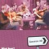

| |
|
|  |
What Road?
(2003) |
| |
|
| Tracks: |
1. The Rizla
2. Leire's Welcome To Cozac/Fiona MacAskill Of Breakish
3. Shady Grove
4. Gillian's Waltz
5. The Aird Ranters/Inshriach
6. Swallow's/Katy Hill/Garry Banjo
7. Sandy Ower Da Lea/Donegal Highland/Strathspey
8. Billy's New Box/Moll Roe/Farewell To Whalley Range
9. Alasdair's Tune
10. Soliloquy Waltz/Billy Shaw The Satellite King
11. Kaleb Watt Of The Broch/Irish Reel/Greek Street
12. Skipping Barfit Through The Heather/Fiery Jock
13. Celtic Thunder/Pressed For Time |
| |
| |